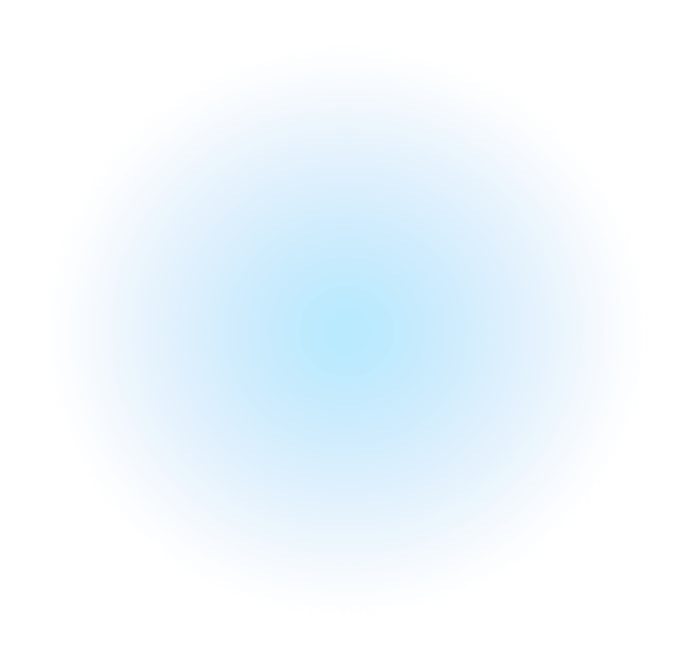
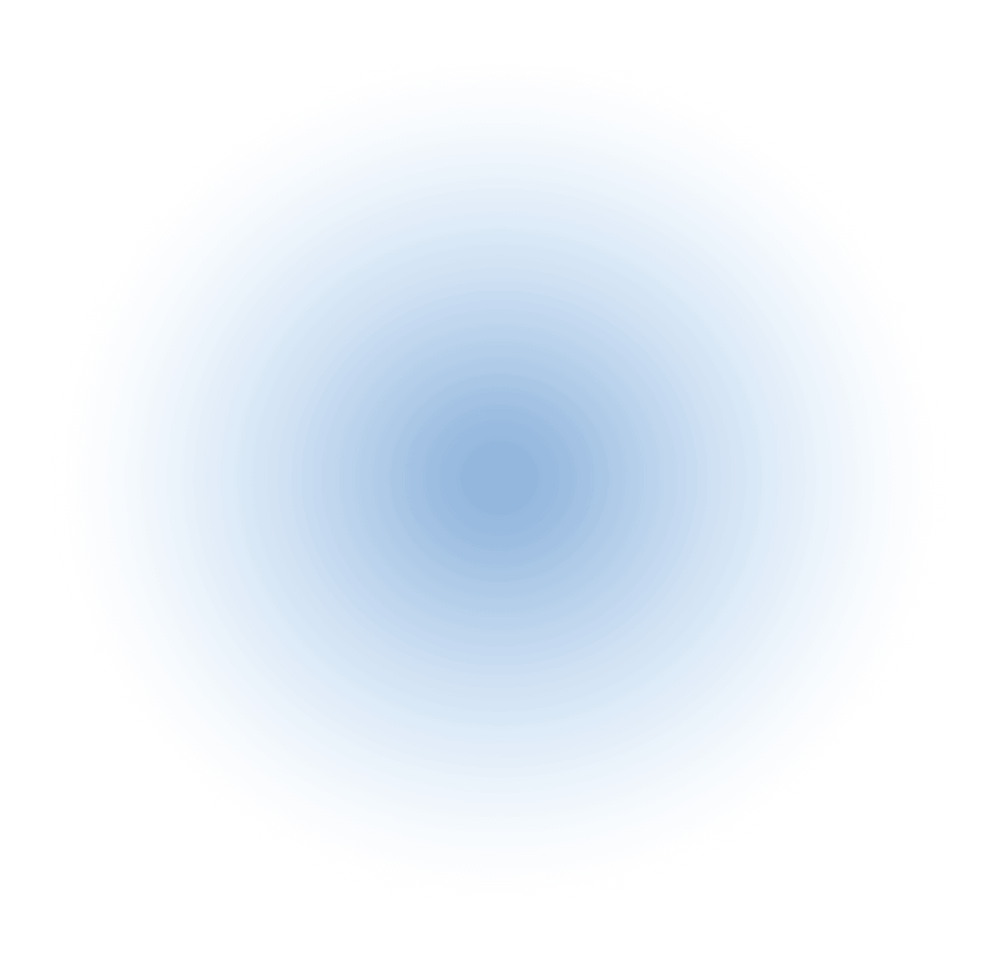

特別コンテンツ 02
化学と科学の違い
堺商事は「化学」品の専門商社ですが、「化学」と「科学」の違いを気に留める機会は中々ないと思います。
聞き流してしまいがちなこの違いを、堺商事と共に学んでみましょう！
化学とは
「化学」は「科学」の中の一部門
化学は、物質の構造や性質、物質相互間の化学反応を研究する学問であり、自然科学の中の一部門です。簡単に言うと物の変化（＝化ける）を研究する学問を「化学」といいます。化（ば）け学という言い方をすることもありますね。私たちの身の回りのもの、私たち自身、地球、宇宙を構成しているあらゆる物質が研究対象となります。その物質を化学の力で組み合わせると、様々な「化学品」が生まれます。
化学とは
「化学」は「科学」の中の一部門

科学とは
「科学」の範囲は理科系だけではない！
広い意味でいう科学とは、観察や実験などで実証された体系的・法則的な知識のことです。学問＝科学と思っていただければ分かりやすいかもしれません。主には自然科学のことを指しますが、他にも社会科学（経済学など）や人文科学（心理学など）の分野でも使われている言葉です。
科学とは
「科学」の範囲は
理科系だけではない！

つまり！
科学
化学
堺商事はここ！
科学の中に化学がある
ということになります。
化学品の可能性
生活・社会のあらゆる場面に
貢献する、化学品
化学には縁がない…と思っていませんか？私たちの身の回りにある製品は、様々な化学品の性質（燃えにくい、伸び縮みする、水を吸収しやすい、光を取り込みやすい等）を活かして作られています。その製品もまた、技術の進歩によってさらに良いものが日々生み出されており、私たちの暮らしを豊かにしてくれています。私たちの生活は、化学とは切っても切れない関係なのです。堺商事は、お客様にその化学品に関する正しい情報を伝え、原料を安定供給する役割を担っています。
電子部品に

自動車に
塗料・インキ・
コーティングに
看板・サインに
衛生用品に

食品に
堺商事が取り扱っている化学品
さらに学ぶ

世界は、近い。